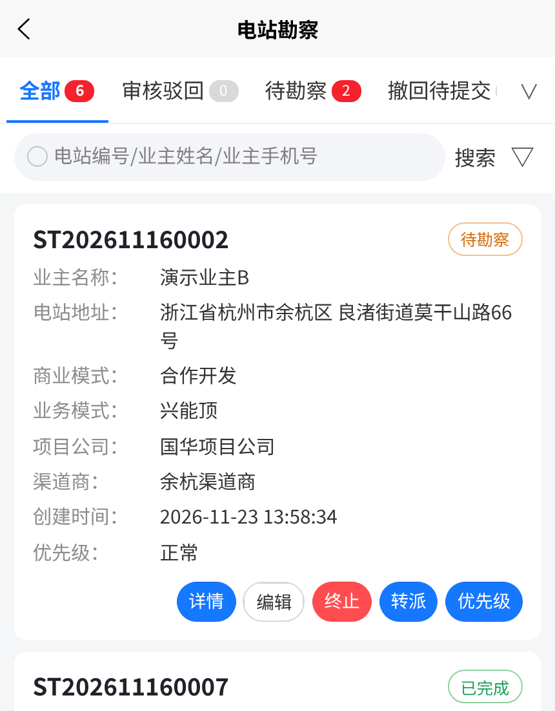

电站勘察
这个模块干什么
商机初勘审核通过后，系统生成电站勘察单，由现勘员到现场定位打卡、填写屋顶和安装条件、上传取证照片，再提交审核。勘察通过后，业主补贴和电站签约同时开启。
谁来用
现勘员办理。审核员负责通过或驳回。
从哪里进入
- 现场端：「应用」→「电站开发」→「电站勘察」，或从首页工单中心进入待办。
- 电脑端：首页或「开发/交付」中的「电站勘察」。

图：现场端电站勘察列表。待勘察状态下有「详情」「编辑」「终止」「转派」「优先级」。图中地址为演示数据，请按实际业务填写。
操作步骤
- 打开「待勘察」中的单据。如需交给其他现勘员，点「转派」，选择接收人后确定。转派后，原处理人的待办中不再出现这张单。
- 需要加急时，点「优先级」。当前演示环境可选「正常」或「加急」。
- 进入表单后，先完成「现勘定位打卡」。未定位就提交，系统会提示「不满足限制提交条件：请先完成现勘定位打卡」。
- 填写测绘和屋顶信息，例如并网接入点距离、安装条件是否合格、是否禁飞区、车辆能否直达、屋顶类型、安装方式、单片功率、屋顶尺寸和容配比等。带星号的为必填。
- 按照片位上传取证，至少包括正大门、主房房屋整体，以及其他页面要求的环境照片。屋顶排布图请自行上传，系统不会自动计算排布或出图。
- 检查完成后提交。
若勘察中发现需要消缺，可在「是否消缺」中选择「是」，后续在 消缺工单 中继续办理。
状态与按钮
| 状态 | 常见按钮 |
|---|---|
| 待勘察 | 详情、编辑、终止、转派、优先级 |
| 撤回待提交、审核驳回 | 详情、编辑、终止 |
| 待审核 | 详情 |
| 已完成、关闭 | 详情 |
页签角标与页签名称一致。筛选会实际生效，只显示符合条件的单据。没有写权限时只能查看。
提交时，系统会校验勘察坐标，以及正大门、主房两类照片；其他带星号的照片槽位不一定会逐项校验，提交前请自行检查是否拍全。
提交之后会发生什么
审批启用时进入待审核；通过后单据变为已完成，业主补贴和电站签约同时开启。驳回后回到可编辑状态，修改后重新提交将从第一个审批节点开始。
注意事项
- 演示环境里若出现「使用示例定位」「填入示例取证」，只是演示辅助，不能当作正式步骤。正式办理请在现场真实定位并拍照。
- 「特殊方案」等字段按页面选项手选或填写，不要理解为系统已自动匹配方案。